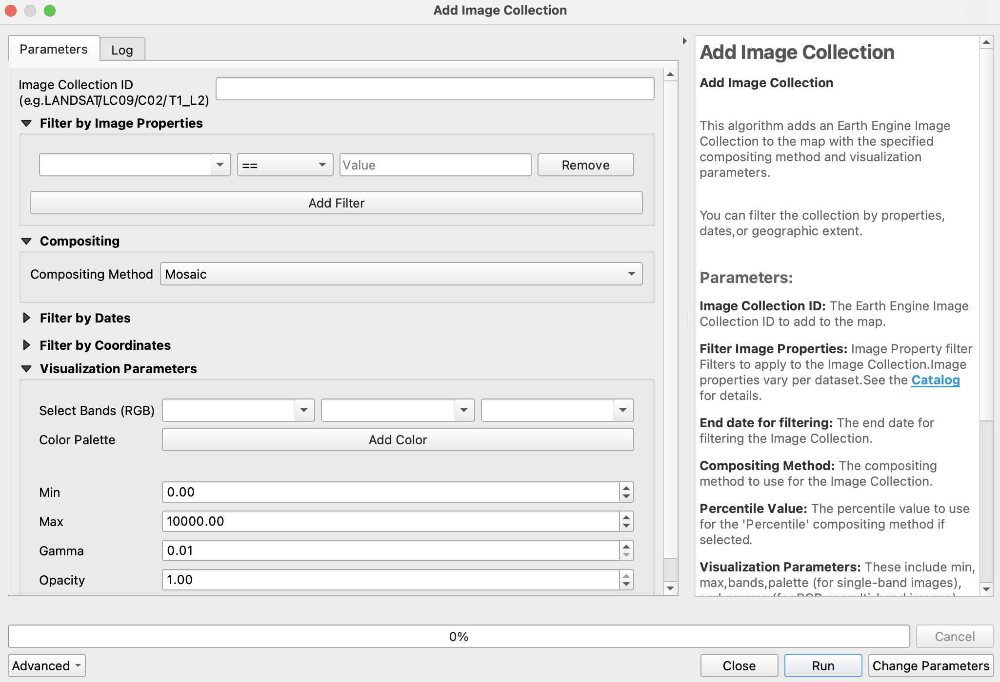
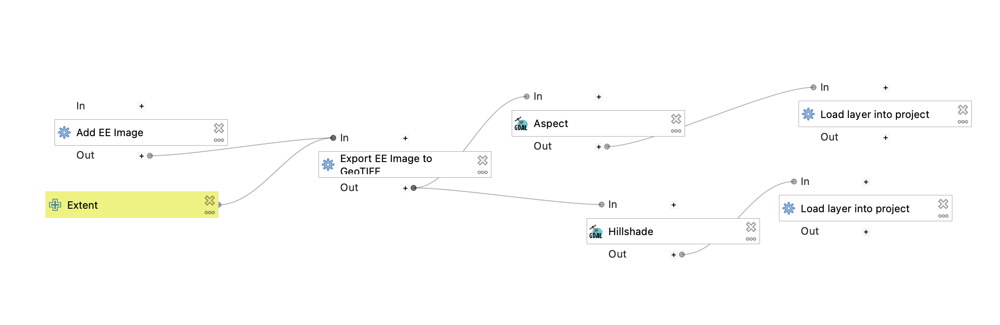

Google Earth Engine Plugin for QGIS¶
The QGIS Earth Engine Plugin integrates Google Earth Engine with QGIS using the EE Python API.
üìñ User Guide
üêû Issue Tracker

üöÄ Quickstart Guide¶
1Ô∏è‚É£ Install the Plugin¶
- Open QGIS Plugin Manager (
Plugins > Manage and Install Plugins). - Search for "Google Earth Engine" and install it.
2Ô∏è‚É£ Find Your Google Cloud Project ID¶
Google Earth Engine requires a Google Cloud Project. To find your Project ID:
- Go to the Google Cloud Console.
- Your Project ID is visible in the URL or can be selected from the resource list.
- For more details, refer to the official Google Cloud Project Management Guide.
3Ô∏è‚É£ Authenticate with your project ID¶
- Select the sign-in under
Plugins > Google Earth Engine > Sign-In. - Follow prompts to enter your project ID.
üåç Using Earth Engine in QGIS¶
With the code and algorithm tools below, the underlying Earth Engine assets are added as a WMS via our own custom QGIS Data Provider. To modify data pulled from Earth Engine, you must export it via the Export tools. The exception is if the retain as vector layer option is selected for the Add Feature Collection algorithm.
To export data, you may use the Export Image as GeoTIFF algorithm. For feature collections added with the retain as vector layer, you may also right-click on the layer and use QGIS' built-in export functionality.
Code Usage¶
You can use Earth Engine datasets programmatically within QGIS using the Python Console:
import ee
from ee_plugin import Map
image = ee.Image('USGS/SRTMGL1_003')
vis_params = {
'min': 0, 'max': 4000,
'palette': ['006633', 'E5FFCC', '662A00', 'D8D8D8', 'F5F5F5']
}
Map.addLayer(image, vis_params, 'Digital Elevation Model')
Map.setCenter(-121.753, 46.855, 9)
Algorithms via Processing Toolbox and Plugin Menu¶
Earth Engine algorithms are available from:
- The Processing Toolbox (
Processing > Toolbox > Google Earth Engine) - The Plugin Menu (
Plugins > Google Earth Engine)
See available algorithms for more details.

Model Designer¶
Earth Engine algorithms can be integrated into QGIS Model Designer workflows:
- Open
Processing Toolbox > Models > Create New Model - Add and chain EE algorithms with other QGIS algorithms
- Save your custom processing model for repeated use
An example model is provided for the hillshade example below: 
Saving Your Project¶
Any layers and model workflows can be saved in your QGIS project file.
Be sure to re-authenticate if opening the project on a new machine or after token expiry.
‚öôÔ∏è Available Algorithms¶
The following algorithms are currently implemented in the plugin:
| Algorithm Name | Description |
|---|---|
| Add EE Image | Loads a single Earth Engine image for viewing |
| Add Image Collection | Loads a filtered Earth Engine image collection for viewing |
| Export GeoTIFF | Exports an EE image as a Cloud-Optimized GeoTIFF to disk |
| Add Feature Collection | Loads a feature collection from Earth Engine |
üìå Each algorithm includes in-dialog documentation to help guide usage directly within QGIS.
üó∫Ô∏è Map Functions¶
The plugin supports several Map API functions similar to the Earth Engine Code Editor:
| Function | Description |
|---|---|
Map.addLayer(eeObject, visParams, name, shown, opacity) |
Adds a dataset to QGIS. |
Map.centerObject(object, zoom) |
Centers the map on an object. |
Map.getBounds(asGeoJSON) |
Returns map bounds. |
Map.getCenter() |
Gets the current center of the map. |
Map.setCenter(lon, lat, zoom) |
Moves the center of the map. |
Map.getScale() |
Returns the current map scale. |
Map.getZoom() |
Returns the current zoom level. |
Map.setZoom(zoom) |
Sets a new zoom level. |
For more details, check the Earth Engine API Documentation.
❓ Troubleshooting¶
Resetting Authentication¶
If you experience authentication issues:
- Run
earthengine authenticateagain. - Delete the credentials file and restart QGIS:
- Windows:
C:\Users\<USER>\.config\earthengine\credentials - Linux:
/home/<USER>/.config/earthengine/credentials - MacOS:
/Users/<USER>/.config/earthengine/credentials
More on authentication troubleshooting: Earth Engine Guide.
Common Errors¶
| Error | Solution |
|---|---|
ModuleNotFoundError: No module named 'ee_plugin' |
Ensure the plugin is installed via QGIS Plugin Manager. |
earthengine authenticate fails |
Run earthengine authenticate --quiet and restart QGIS. |
ssl.SSLError: [SSL: CERTIFICATE_VERIFY_FAILED] |
On MacOS, run /Applications/Python 3.x/Install Certificates.command. |
| Plugin crashes after authentication | Ensure your IP is not blocked by a firewall. Check code.earthengine.google.com. |
SRE module mismatch |
Set PYTHONPATH to plugin extlibs (e.g. export PYTHONPATH=~/Projects/qgis-earthengine-plugin/extlibs) |
ü§ù Contributing¶
We warmly welcome contributions! If you'd like to contribute:
- Check out CONTRIBUTING.md for setup instructions.
- Ensure your contribution relates to an existing issue or discussion.
- Open a pull request or issue before starting major changes.
For feature requests and updates, please check the GitHub Issues and Discussions.
Thank you for helping improve the QGIS Earth Engine Plugin!